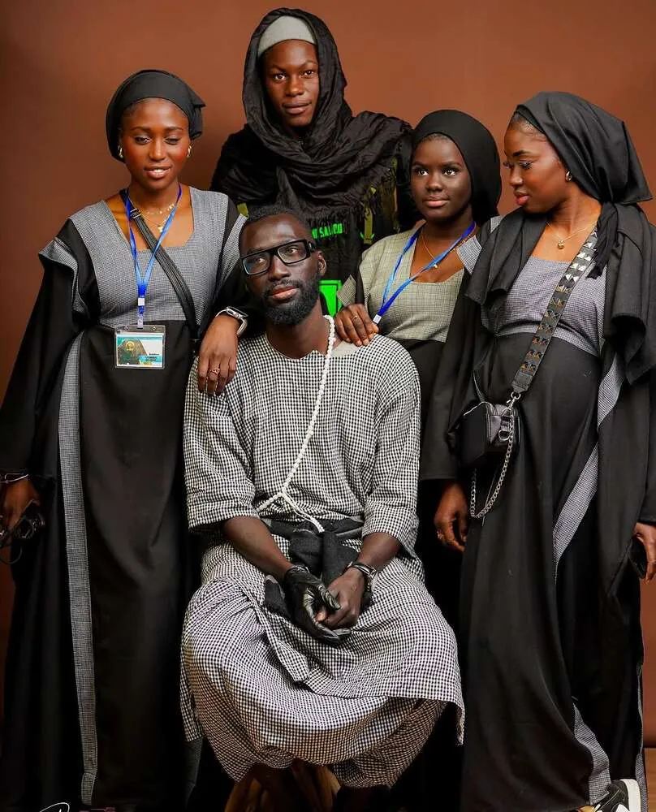

Il giro della casaLa visite de la maison
Keur Serigne Touba Fano
Da fuori la riconosci così: due pilastri bianchi e il cancello grigio. Entra e percorri il vialetto tra le siepi.De l’extérieur, tu la reconnais ainsi : deux piliers blancs et le portail gris. Entre et suis l’allée entre les haies.
Dahira Touba Fano, piccolo dahira con un grande cuoreDahira Touba Fano, petit dahira au grand cœur
La Dahira Touba Fano (Keur Serigne Touba Fano, Khadaikhoul Fadha-il) riunisce dal 2019 i discepoli di Cheikh Ahmadou Bamba che vivono a Fano e dintorni: fede, dhikr e solidarietà, lontano dalla terra natale ma uniti nello spirito della Mouridiyya.
La Dahira Touba Fano (Keur Serigne Touba Fano, Khadaikhoul Fadha-il) réunit depuis 2019 les disciples de Cheikh Ahmadou Bamba qui vivent à Fano et ses environs : foi, dhikr et solidarité, loin de la terre natale mais unis dans l’esprit de la Mouridiyya.
“Liggéey mooy jaamu Yàlla.” Il lavoro è il culto di Dio.Le travail est le culte de Dieu.

Al servizio della dahiraAu service de la dahira
Ogni commissione ha il suo simbolo. Tocca un medaglione per entrare nella sua pagina.Chaque commission a son symbole. Touche un médaillon pour entrer dans sa page.
Il prossimo eventoLe prochain événement
Ogni settimanaChaque semaine
Gli ultimi albumLes derniers albums
“Liggéey mooy jaamu Yàlla.”
Mame Cheikh Ibrahima Fall
Keur Serigne Touba
Tre persone, tre poltroncine, un tema. Ognuno dice la sua, poi ci si confronta per arrivare a un punto di vista condiviso. Per chi conosce la confraternita da una vita e per chi la incontra per la prima volta.
Trois personnes, trois fauteuils, un thème. Chacun donne son avis, puis on échange pour arriver à un point de vue partagé. Pour ceux qui connaissent la confrérie depuis toujours et pour ceux qui la découvrent.
Prima di venire a trovarciAvant de venir nous voir
Dove si trova Keur Serigne Touba Fano?Où se trouve Keur Serigne Touba Fano ?
Keur Serigne Touba Fano, la casa della Dahira Touba Fano, è in Via dell’Artigianato a Monterado (Trecastelli, provincia di Ancona), a pochi minuti da Fano. Su Google Maps basta cercare “Keur Serigne Touba Fano”.
Keur Serigne Touba Fano, la maison de la Dahira Touba Fano, se trouve Via dell’Artigianato à Monterado (Trecastelli, province d’Ancône), à quelques minutes de Fano. Sur Google Maps, il suffit de chercher « Keur Serigne Touba Fano ».
Quando si incontra la Dahira Touba Fano?Quand se réunit la Dahira Touba Fano ?
Ogni sabato dalle 15:00: Al Quran Ak Durus, Kourèl Xassida, Takusàn, Kourèl Zikroulah e Waxtàne Ak Sognè. Il venerdì mattina c’è Yobalu Aljuma e la domenica le lezioni di Corano.
Chaque samedi dès 15h00 : Al Quran Ak Durus, Kourèl Xassida, Takusàn, Kourèl Zikroulah et Waxtàne Ak Sognè. Le vendredi matin il y a Yobalu Aljuma et le dimanche les cours de Coran.
Cos’è una dahira?Qu’est-ce qu’une dahira ?
Una dahira è un’associazione di discepoli della Mouridiyya, la confraternita fondata da Cheikh Ahmadou Bamba (Serigne Touba). Ci si riunisce per pregare, recitare i khassaïdes, studiare e aiutarsi a vicenda.
Une dahira est une association de disciples de la Mouridiyya, la confrérie fondée par Cheikh Ahmadou Bamba (Serigne Touba). On s’y réunit pour prier, réciter les khassaïdes, étudier et s’entraider.
Chi può partecipare?Qui peut participer ?
Tutti sono benvenuti, anche chi non conosce la confraternita e vuole scoprirla.
Tout le monde est le bienvenu, même ceux qui ne connaissent pas la confrérie et veulent la découvrir.